Префектура Тотиги · Насу · ферма и кафе
«Синрин-но бокудзё» в Насу: коровы в лесу, масло как визитная карточка и мороженое из свежего молока
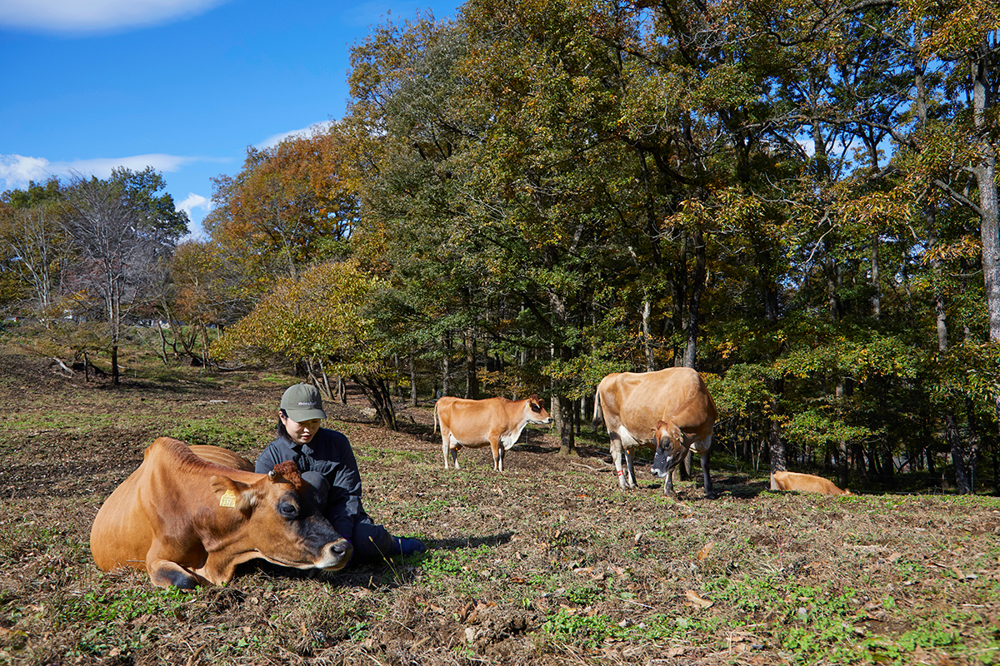
Название «Синрин-но бокудзё» переводится как «лесная ферма», и это не метафора: коровы здесь пасутся среди деревьев на склонах Насу. Ферма делает масло, мороженое и сыр, а гостей пускает к коровам бесплатно.
Ферма
Пастбище среди деревьев
Слово «молоко» обычно рисует просторный луг и коров на траве. В Японии всё иначе: по оценке за 2022 год, на выпас выходит около 17% молочного стада, а большинство коров проводит всю жизнь в коровнике. Ферма «Синрин-но бокудзё» в городке Насу на севере префектуры Тотиги, как и обещает название, стоит в лесу, и её коровы гуляют между деревьями.
Метод, по которому здесь работают, называется горным молочным животноводством. Его предложил в 1960-х годах ботаник-эколог Кёдзи Наохара: коров выпускают на лесистые склоны, они объедают траву и сами поддерживают гору в порядке. Писатель и кулинар, который много лет ездит к производителям по всей Японии, когда-то побывал на другой ферме. Там, в горах префектуры Иватэ, на высоте 800 метров, он видел, как коровы свободно бродят по склонам. Её основатель, один из тех, кто распространял метод Наохары, сказал ему, что лучший из его учеников это Ямакава. Так он и оказался в Насу.
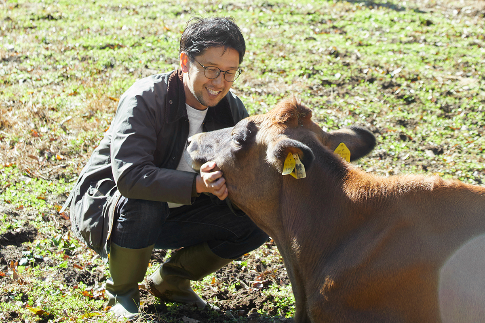
Масахиро Ямакава изучал животноводство в Токийском сельскохозяйственном университете, работал на той самой ферме в Иватэ, а потом пришёл в компанию AMITA, которая занимается экологическими решениями и как раз открывала молочное направление. Два года он провёл на ферме в районе Танго в префектуре Киото, затем его перевели в Насу. Через полтора года компания передала ему хозяйство, и ферма стала самостоятельной.
История
2011 год и возвращение на пастбище
Сразу после этого случилось Великое восточнояпонское землетрясение 2011 года, и по всей префектуре Тотиги запретили выпас скота.
«Я подумал, что всё кончено. Решил закрыть ферму и поехал со всеми прощаться. И увидел, как одна лавка японских сладостей печёт торты и отвозит их пострадавшим. Подумал: дело кондитера ведь в том, чтобы приносить людям радость. Вот что такое работа»
глава фермы
Ямакава не сдался. Он привёл хозяйство в порядок, и в 2014 году коровы снова вышли на пастбище. В 2021 году у фермы появился второй участок в Масико, городке керамики на юго-востоке префектуры. Ради эффективности проще было бы расчищать землю по соседству, но глава фермы считает главной задачей молочного дела другое: возвращать к жизни заброшенные леса и поля, которые перестали обрабатывать.
«Если на горе можно растить коров, значит, японские горы богаты. Коровы используют то, чем человек не пользуется. Превращать то, что людям не нужно, в ценность: в этом и смысл молочной фермы. Коровы связывают природу и людей»
глава фермы
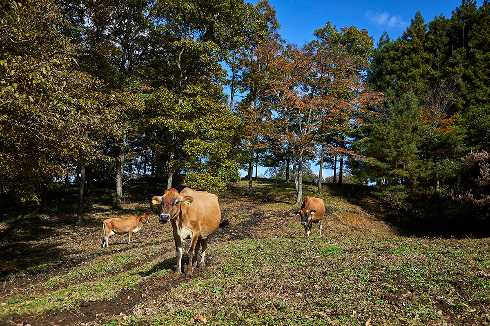
У каждой коровы есть имя. На дойку их зовут по именам, и коровы сами заходят в доильный домик, а после дойки достаточно сказать «пошли», и они возвращаются на пастбище.
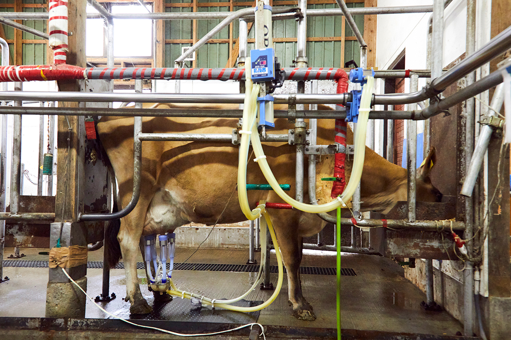
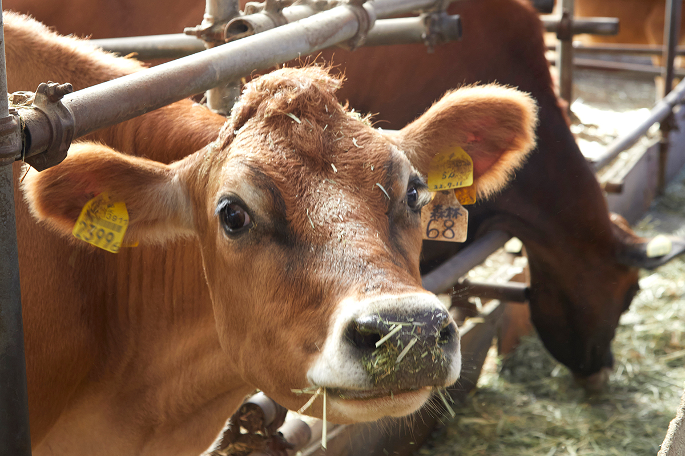
Продукты
Масло вместо визитки
Главное убеждение Ямакавы: жизнь коровы должна стоить больше. О коровах заботятся и на ферме, и после того, как они её покидают.
«Даже то, что коров называют милыми, уже ценность. Молоко сразу после дойки хранится всего неделю. А если сделать масло, срок годности растёт, продукт становится компактнее, его легче развозить. Сыр живёт ещё дольше, и чем дольше он зреет, тем дороже стоит. Переработка добавляет молочным продуктам ценность»
глава фермы
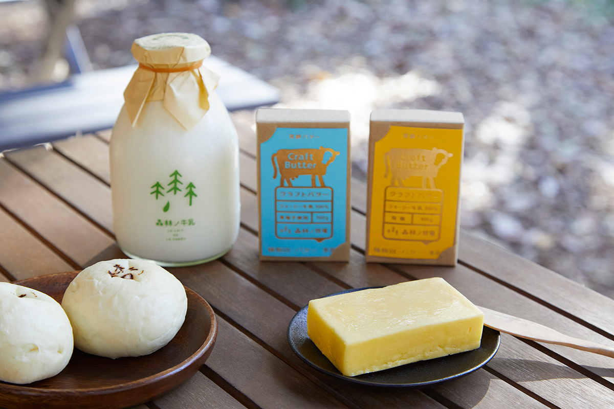
Писатель больше всего ценит именно это масло: оно лёгкое, хотя это чистый жир. В масле, сжатом до концентрата, особенно ясно проявляются взгляды фермера, корм коров и место, где они живут. Пачка размером с визитную карточку, и масло для фермы действительно стало визиткой. Глава фермы говорит, что крафтового масла в Японии на удивление мало, и делает его по заказу и под чужими марками.
Из обезжиренного молока, которое остаётся после масла, делают «Бата-но итоко», «кузину масла»: этот продукт стал хитом, а выпускает его компания GOOD NEWS из Насу. Ещё одна ветка дела: ферма приняла сырную мастерскую «Насу-но мори» и начала варить сыр.
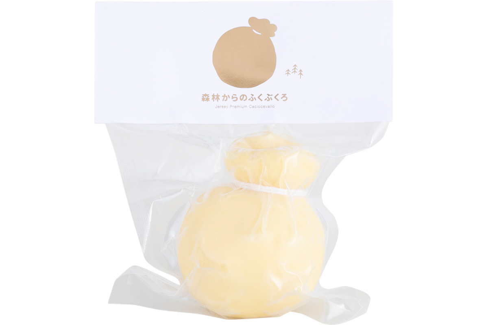
«Без переработки молочное дело не может расти. Укрупнение нужно, но в стране, где людей становится меньше, оно когда-нибудь упрётся в стену. Лучше уже сейчас иметь много разных маленьких ферм»
глава фермы
У молока здесь есть времена года: летом оно чуть желтоватое, зимой белое и более густое на вкус. Вкус меняется вместе с кормом, и эта разница теряется при массовом производстве.
Ценность жизни
Имена, кожа и карри
Когда корова больше не даёт молока, её продают на мясной рынок, и цена там низкая. Ферме такой конец кажется грустным, поэтому мясо она продаёт сама: так появились мясной соус «Иноти-но мито-сосу» («соус жизни») и карри «Итосии карэ» («милое карри»).
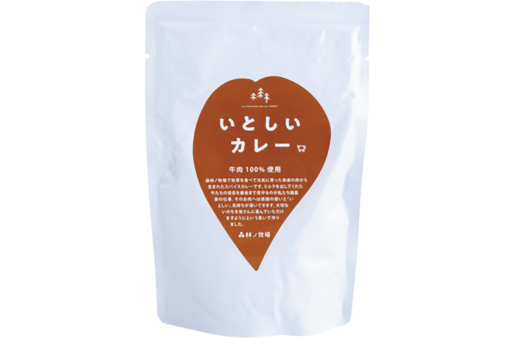
Из коровьей кожи делают вещи под маркой «Ано ко но кава», «кожа той самой». На каждой, даже на простой визитнице, написаны имя коровы и её характер, чтобы владелец знал, какой она была.
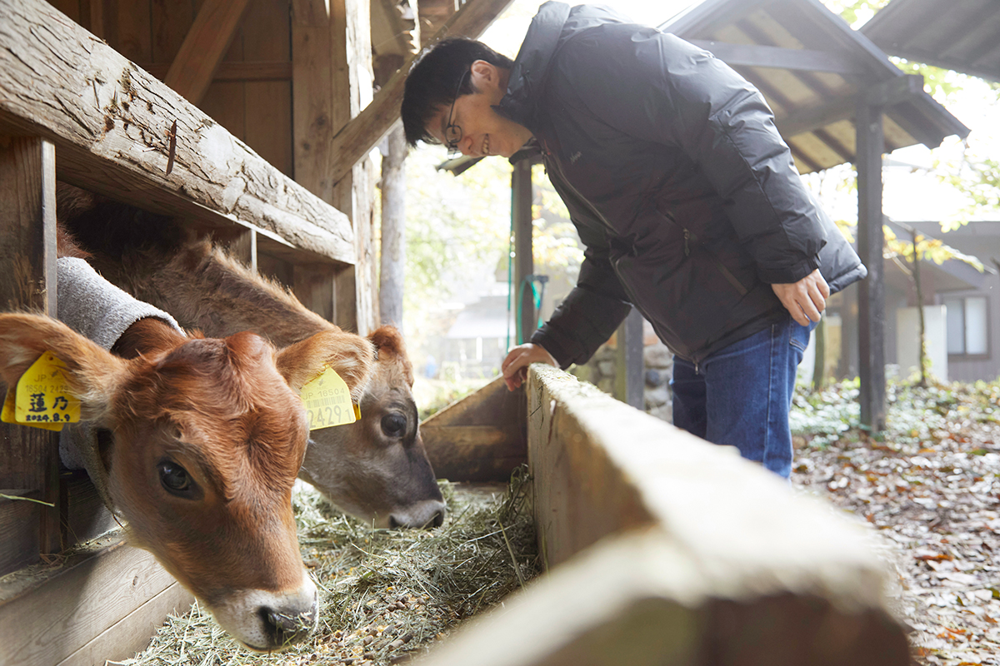
Будущее
Не трава и не зерно, а местный корм
Во время прогулки по ферме коров как раз выпускали на пастбище. И тут глава фермы неожиданно говорит, что выпас для него не догма.
«Просто я люблю этот вид. Я думаю, что выпас повышает ценность коров, но, честно говоря, неважно, едят они траву или зерно, лишь бы были здоровы и счастливы. Мы хотим растить коров на местном корме, как можно ближе к дому»
глава фермы
Там, где живут люди, всегда остаются излишки: пищевые отходы, неудобная земля. Коровы умеют пустить их в дело, и Ямакава хочет когда-нибудь показать это в цифрах.
«Тогда люди, наверное, скажут: как хорошо, что эти коровы у нас есть»
глава фермы
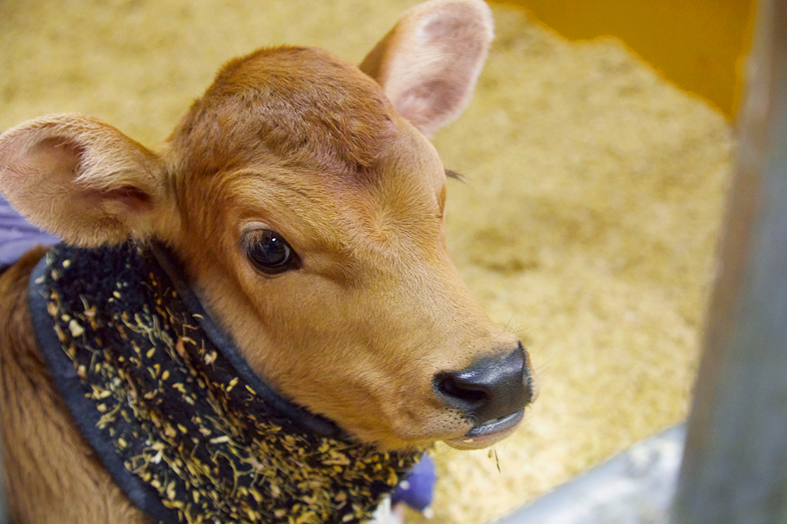
В книге «Горное молочное животноводство Японии» Кёдзи Наохара писал, что миссия молочного дела в том, чтобы своим созидательным трудом сделать японское общество лучше. На ферме в Насу это легко почувствовать: коровы едят траву, вокруг коров собираются люди, люди делают природу богаче и получают её дары.
Визит
Кафе, мороженое и прогулка к коровам
Прийти на ферму может каждый, и вход бесплатный. Рядом с кафе начинается тропа в лес, и в часы работы по ней можно дойти до пастбища, посмотреть на коров и погладить телят.
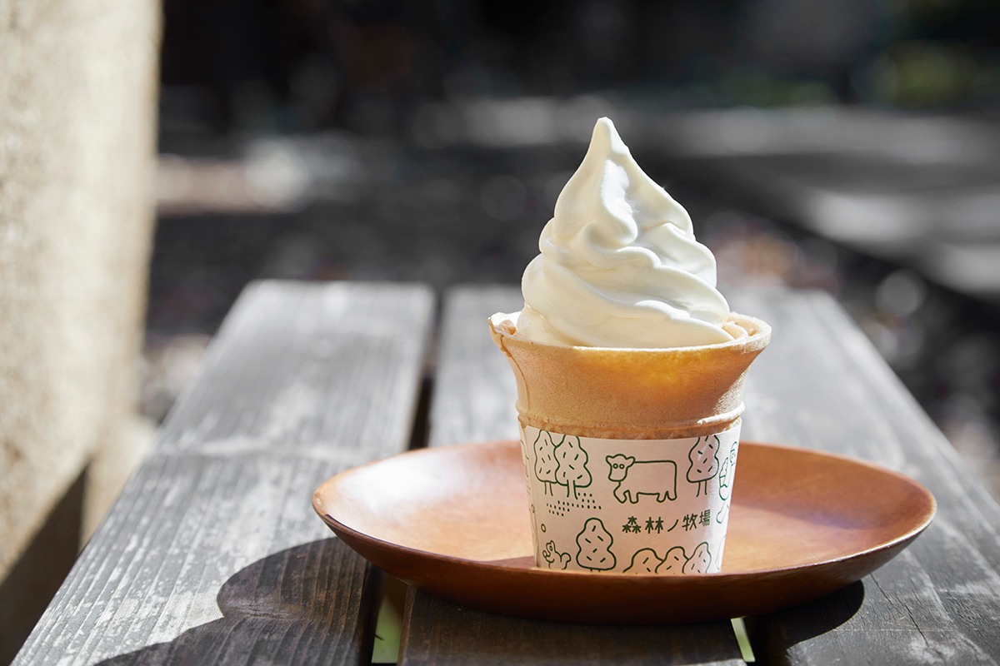
В кафе подают мороженое, другие молочные продукты и обеды из овощей соседних фермеров, а молочные продукты можно купить с собой. Среди продуктов фермы есть «Кисумиру» (KISSMILK), кисломолочный напиток из обезжиренного молока, оставшегося от масла (650 иен в 2025 году), и «Сибору ёгуруто», густой йогурт в мягкой бутылке, с сахаром и без сахара (по 750 иен в 2025 году).
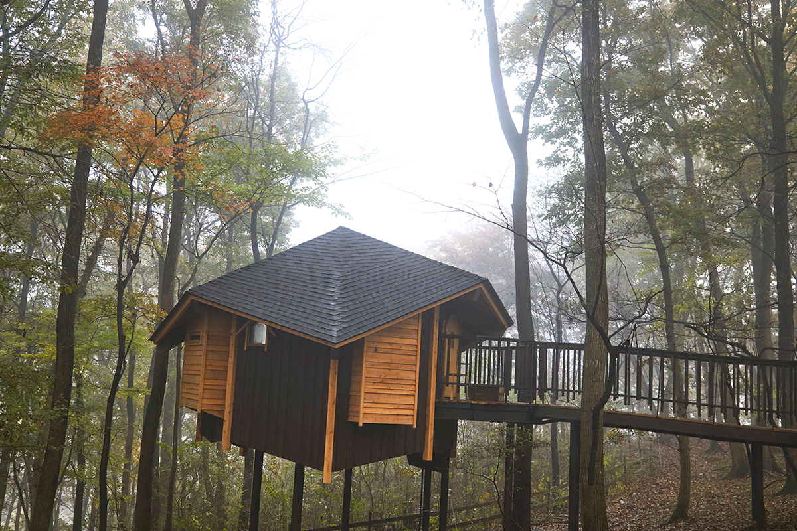
«Синрин-но бокудзё»
- Адрес
- префектура Тотиги, уезд Насу, Насу, Тоёхара-оцу, 627-114
- Телефон
- +81 287-77-1340
- Часы работы
- 10:00–16:00
- Выходные
- четверг (в праздники открыто)
- Цены / Вход
- вход на ферму бесплатный
- Сайт
- shinrinno.jp
Фото: Кэнта Ёсидзава.